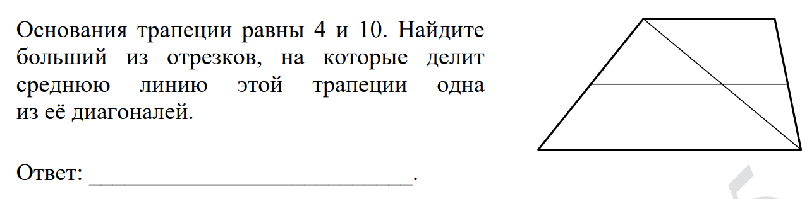
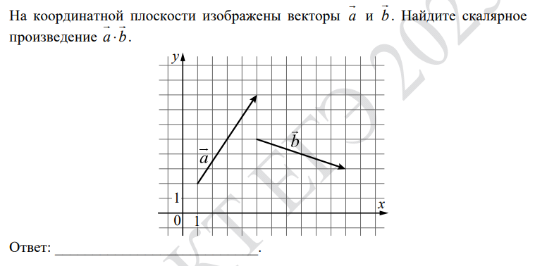
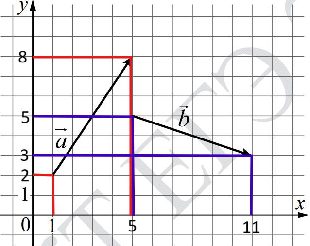

мы не будем разбирать все прототипы из демоверсии!!!
1 задание

Диагональ делит трапецию на два треугольника с основаниями 4 и 10. Значит, средние линии этих треугольников будут равны
2 и 5 соответственно. Наибольшим является
5, поэтому его и записываем в ответ.
!!!ПРАВИЛО!!!: По определению средняя линия является отрезком, соединяющим 2 стороны треугольника. При этом она параллельна третьей стороне и ее длина равняется ее половине.
2 задание

Найдем координаты каждого из векторов. Чтобы это сделать, нужно найти координаты начала и конца каждого из векторов.

Координаты точек вектора a: (1;2); (5;8).
Координаты точек вектора b: (5;5); (11; 3).
Теперь мы можем найти координаты векторов:
a {5 - 1; 8 - 2};
{4; 6}
b {11 - 5; 3 - 5};
{6; -2}
Теперь осталось по формуле скалярного произведения векторов вычислить ответ:
a * b = xa * xb + ya * yb
Если мы подставим, то получим:
a *
b = 4 * 6 - 6 * 2 = 24 - 12 =
12.
Это и является ответом.